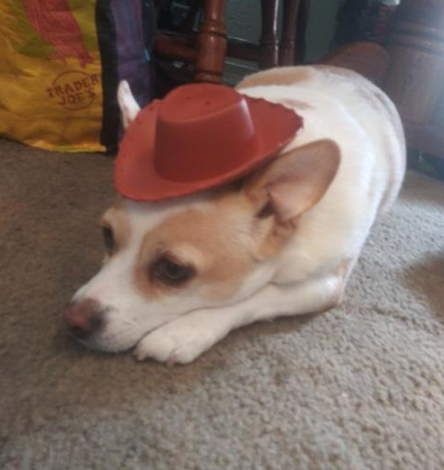
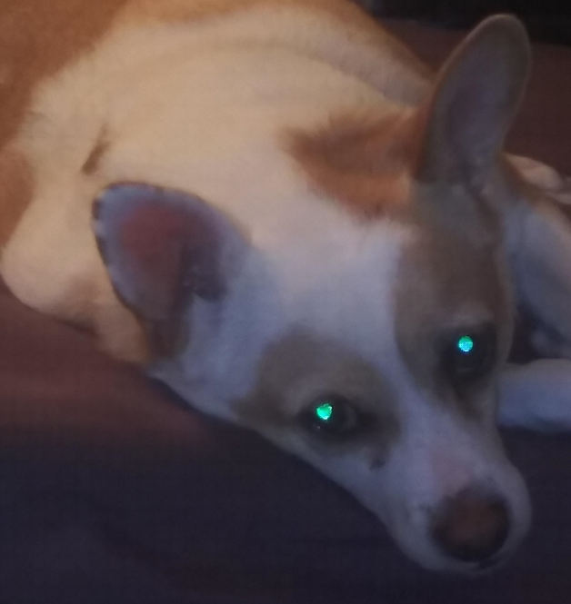

Rocky "The Rock" Rockington
Turns out, dogs can be beings of both good and evil. Rocky is one of these dogs. He sucks, but at the same time, he's super cute, so it's conflicting. He'll bite your fingers then do something cute, like play dead, and you won't know how to feel. Living with this tiny beast is horrible in so many ways. He eats all my food and steals my socks. Don't trust him if he somehow learns how to talk and asks you for something/tells you a riddle. He's probably lying.
 